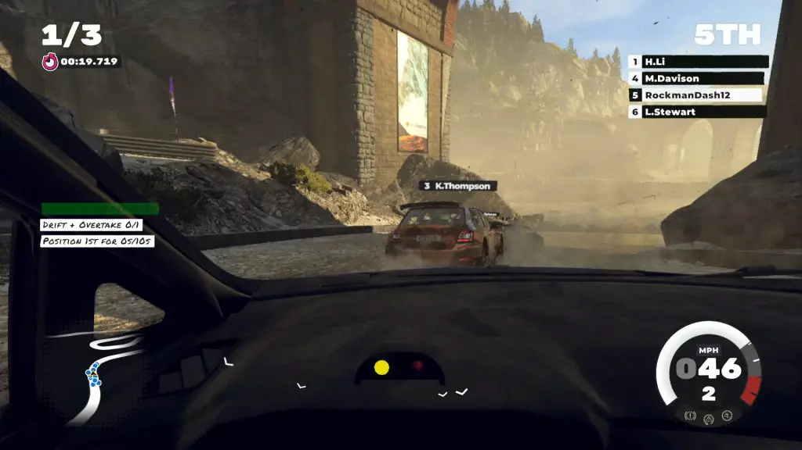
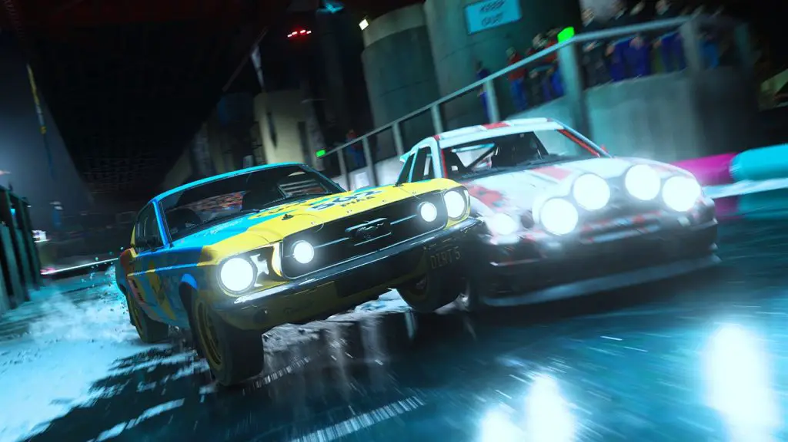
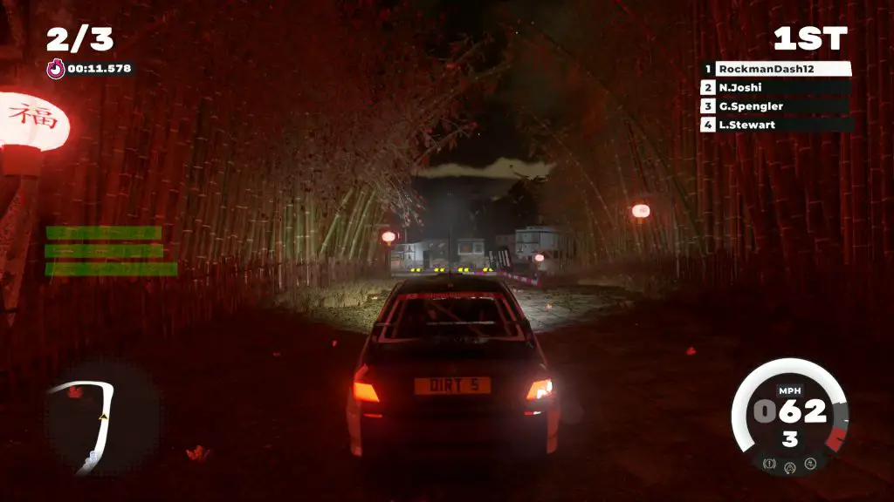
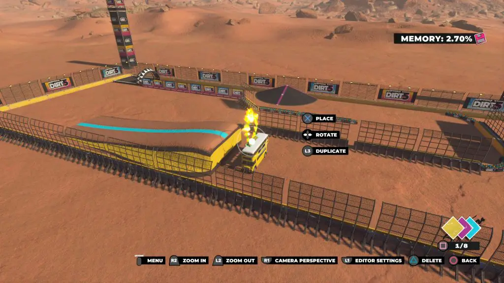
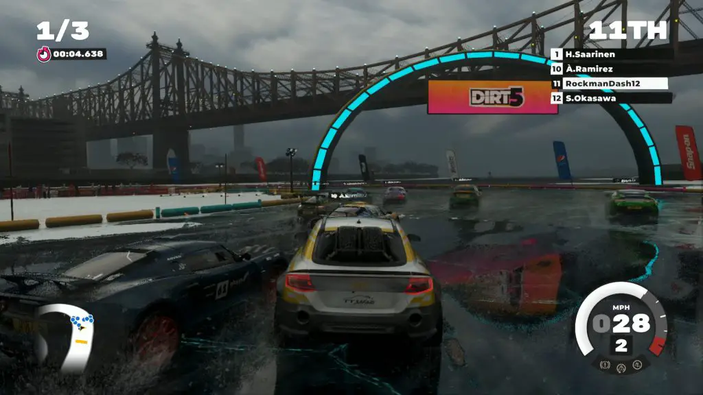

With Dirt 4 and Dirt Rally, Codemasters has carved a niche for themselves in hardcore rally racing. While those games appealed to a handful of fans, how do you attract new players alienated by the simulation difficulty and want a more arcadey racing game? To grab the attention of the general racing audience, the developer shows off a more traditional formula with Dirt 5, which packs in tons of variety. Still, it might leave the hardcore players wanting more.
Before we get started by talking about the gameplay, we have to talk about graphics. Being a launch title for the next-generation consoles, a lot rides on the visual presentation of this entry. However, this may be unfair, seeing how the series has never focused on hyper-realistic graphics. Still, I should mention that the environments and effects appear plain, the skybox isn’t impressive, and the textures appear low res.
While there are moments when the game looks decent, such as during night races, it’s just not the best-looking racing game around. It’s best to think of the next-gen versions as a current-generation game that can stretch its wings thanks to the improved hardware. A big part of why this game isn’t mind-blowing visually is how scalable it is. Dirt 5 can run as 4k 120 as a launch title while having reasonably performing current-gen versions as a base.

Regardless of the lacking visuals, Dirt 5 plays surprisingly well on the current generation consoles. While I’m assuredly looking forward to trying Dirt 5 on the next-gen consoles, the current-gen version makes a great case for its appeal through its gameplay systems.
There are 2 modes available to play in, Image Quality Mode @30 FPS, which looks fairly average for a current-gen game, and Performance Mode @60 FPS, which is stable but at the cost of downscaled graphics. Dirt 5 just looks bad on Performance Mode mode as it compares to games released on Xbox 360.

The silver lining here is that I had a smooth and solid experience no matter which mode I used. Playing on Quality Mode, which I had on throughout most of the time recording, offers a better look at the tracks and textures, but I still suggest playing on Performance Mode. Even at the cost of low res visuals, playing in 60fps feels far more fluid, which adds to the gameplay experience and is where Dirt 5 shines.
I should mention that the recommended specs for the PC version are basically next-gen consoles, while the minimum is equal to this gen’s pro consoles. I originally wanted to do the review on the PC version, and for some reason couldn’t get it to work correctly on my desktop, but trying the game on my laptop (Zephyrus G14 – Ryzen 9 4900HS, RTX 2060MQ), I just had too many performance issues to the point in which I basically gave up. Granted, this is prerelease software, so your mileage may vary, but I found the PC’s inconsistent performance to be troublesome.

One of the Dirt series’s main appeals has been the variety of terrains you’ll encounter throughout your racing, including Gravel, dirt, mud, and ice. Each terrain will affect how your car handles and provides a fun experience as you adjust to the different types. The controls feel like a mix of traditional arcadey racers and the more punishing realistic racing that is prominent in Dirt 4 and Dirt rally, which provides a satisfying feeling if you’re a fan of the genre.
Dirt 5 offers a ton of modes and things to do. There’s a robust career mode, multiplayer, free play, time trial, and playground mode from the main menu. While most of these lead you to just a regular race, the options vary whenever you race. This is because the races take place in tracks themed at places worldwide, such as Greece, China, South Africa, and the USA. Additionally, there are a few different racing options such as Ultra Cross, Rally Raid, Land Rush, Stampede, Ice Breaker, Path Finder, and Gymkhana. It becomes easy to sink time into Dirt 5 because of the sheer variety. As someone who tends to treat racing games like junk food, this is exactly what I like to see in a racing game.

I do have to mention 2 standout features – the split-screen multiplayer and playground mode. I haven’t been able to try out the split-screen local multiplayer because of covid properly, but this is one case when we get a 4 player split-screen, which is exceedingly rare nowadays.
The playground mode is a ton of fun; it’s a course maker where you design your own track. There are also lots to play in regards to other people’s tracks. Though it is worth mentioning that the tools you have aren’t really designed to drive through without crashing, it always feels a bit like a hack versus the procedurally generated tracks of dirt 4, which I wish that this game had.
Dirt 5 is a great entry into the franchise, but diehard racing fans will probably find the other entries to be more rewarding, if only because this entry takes a distinctly more casual approach. This can be seen in certain modes such as Rally, which takes a different approach in Dirt 5. Here, Rally is a race with others instead of a traditional Rally for the best times with a reader, and it made me wonder why the classic option was offered.

That being said, I appreciated the more casual approach to Dirt 5. While I’d say that the peaks don’t hit as high as Dirt Rally, as someone who isn’t a diehard racer, the variety offered in the various mode held my interest far longer than any simulation racer.
Dirt 5 provides a more approachable racer that acts as a decent successor to Dirt 4 and Dirt Rally while taking on the series in a few different ways. Diehard series fans might miss some of the more simulation aspects from the series, but Codemasters definitely found a healthy balance of the two offerings. Sure, you might not be blown away by the graphics, but you won’t go wrong adding this fun racer to you next-gen launch catalog.